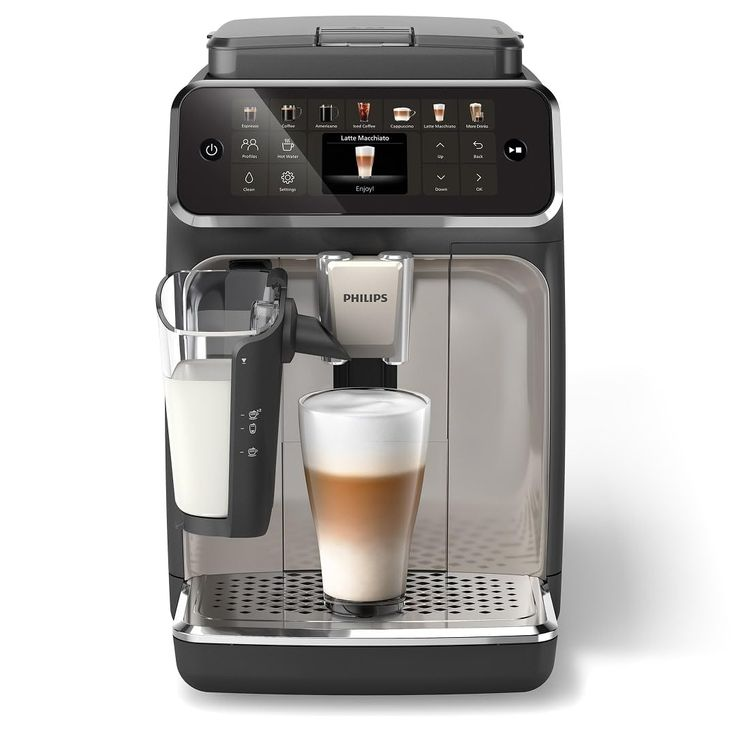

They Say Age Brings Wisdom
They say age brings wisdom — and we couldn’t agree more.
For over 50 years, Twilight Coffee has been perfecting the art of a truly great cup. From our slow-roasted beans to the comforting aroma that fills every room, we believe coffee should be more than a drink — it’s a warm moment shared, one cup at a time.

Step Into The Future
Tradition meets innovation.
Our Smart Café system brings the future of coffee to life — over 200 handcrafted drink options made in under 90 seconds, anytime, anywhere. It’s the convenience of technology with the soul of a barista.
Travel The World One Cup At A Time®
Travel the world — one cup at a time.
We partner with small farms across the globe to bring you ethically sourced, single-origin coffee. Every bean tells a story — of craft, culture, and care.
Visit Us
Store Hours
- Monday – Friday:
- 7:00 AM – 5:00 PM
- Saturday – Sunday:
- 9:00 AM – 3:00 PM
Closed only on holidays ☕
FAQ
Do you offer delivery or pickup?
Yes! You can order online for pickup or have your favorite drinks delivered through our partners.
Are your beans fair trade certified?
All our coffee is sourced ethically and we pay above fair trade standards to support local farmers.
Can I buy coffee beans to brew at home?
Absolutely! Visit our store or order online to get our signature Twilight blend in 250g and 500g packs.
Do you have dairy-free or vegan options?
Yes — we offer soy, almond, and oat milk alternatives for any drink on our menu.